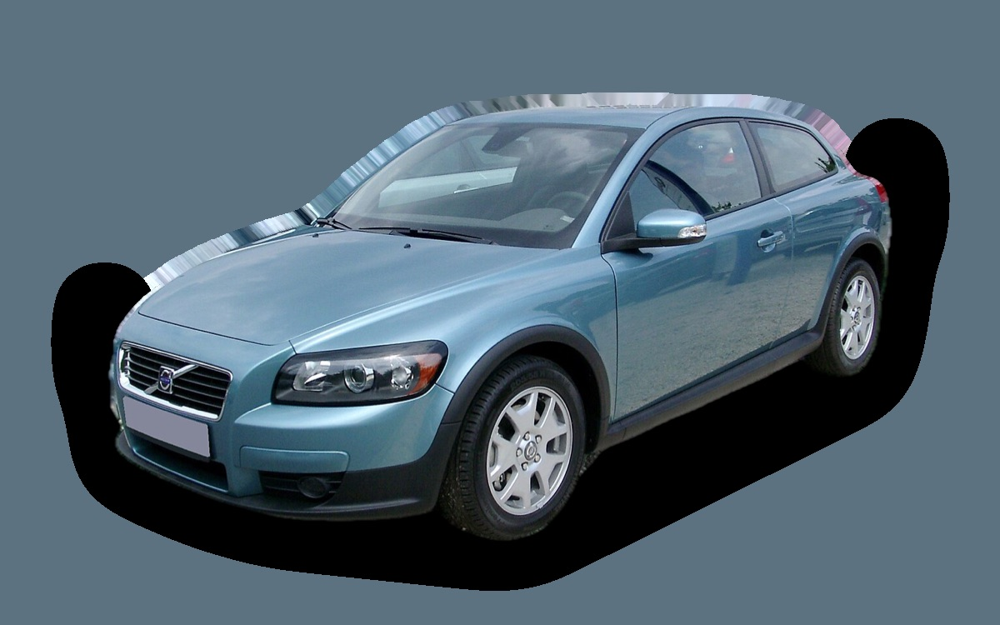

Vad kostar en Volvo C30 per månad?
En Volvo C30 från 2010 kostar cirka 3 132 kr i månaden, allt inräknat.


Månadskostnad per årsmodell
| Årsmodell | Version i beräkningen | Pris | Per månad | Betyg |
|---|---|---|---|---|
| 2013⚠︎ | 1.6 100, Kinetic | 61 200 kr | 3 304 kr | E |
| 2010 | 1.6 100, Kinetic | 42 900 kr | 3 132 kr | E |
| 2007 | 1.6 100, Kinetic | 30 300 kr | 2 990 kr | E |
Räknat på 5 års ägande och 1 250 mil per år, med bränslepriser från 2026-10-22. Månadskostnaden innehåller värdeminskning, drivmedel, service och reparationer, försäkring och fordonsskatt.
⚠︎ Årsmodeller med varningstriangel har färre än fem annonser att räkna på, så priset är osäkert.
Så fördelas kostnaden för en 2010:a
- Värdeminskning: 312 kr/mån
- Drivmedel: 1 559 kr/mån
- Service och reparationer: 979 kr/mån
- Försäkring: 158 kr/mån
- Fordonsskatt: 124 kr/mån
Begagnatpriser i annonser
| Årsmodell | Medianpris | Annonser | Typiskt miltal |
|---|---|---|---|
| 2012 | 68 000 kr | 9 | 17 500 mil |
| 2011 | 44 900 kr | 16 | 21 300 mil |
| 2010 | 44 800 kr | 13 | 21 800 mil |
| 2009 | 39 900 kr | 8 | 22 300 mil |
| 2008 | 34 900 kr | 40 | 22 800 mil |
| 2007 | 39 900 kr | 21 | 23 300 mil |
Medianpriset i svenska annonser per årsmodell i oktober 2026 (källa: Blocket, BilKoll). Annonspriser är utgångspriser, och slutpriset kan bli lägre.
Motorer och versioner
| Motor | Drivmedel | Effekt | 0–100 km/h | Förbrukning (WLTP) | Räckvidd | Årsmodeller | Pristillägg |
|---|---|---|---|---|---|---|---|
| 1.6 100 | Bensin | 100 hk | 11,9 s | 7 l/100 km | – | 2007–2013 | – |
| D2 115 | Diesel | 115 hk | 11,6 s | 4,1 l/100 km | – | 2011–2013 | +9 100 kr |
| T5 230 | Bensin | 230 hk | 6,7 s | 9 l/100 km | – | 2007–2013 | +57 000 kr |
- Utrustning: Kinetic, R-Design (+21 000 kr)
Fakta
- Kaross
- Halvkombi
- Årsmodeller
- 2007–2013
- Senaste nypris
- 209 300 kr
- Bagage
- 233 liter
- Euro NCAP
- inte testad
- Nybilsgaranti
- 3 år
- Driftsäkerhet
- 3 av 5
- Helförsäkring, uppskattning
- 5 100 kr/år
- Service, uppskattning
- 3 600 kr/år
Vanliga fel att ha koll på
- Turbo och insprutartätningar (1,6-diesel), reparation cirka 12 000 kr
- Kamrem och spännare (motorskada om den brister), reparation cirka 8 000 kr
- Vevhusventilation (PCV) sätts igen, reparation cirka 6 000 kr
Felen gäller vissa motorer och årsmodeller. I kalkylatorn räknas risken för just den version du väljer.
Fördelar och nackdelar
Fördel
Personlig design med glaslucka bak och lågt inköpspris.
Nackdel
Litet bagage och bara fyra säten.
Liknande bilar
 Honda Jazz3 132 kr/mån som 2023:a
Honda Jazz3 132 kr/mån som 2023:a Toyota Corolla3 141 kr/mån som 2023:a
Toyota Corolla3 141 kr/mån som 2023:a Volkswagen ID.33 098 kr/mån som 2023:a
Volkswagen ID.33 098 kr/mån som 2023:a Volkswagen Golf 73 083 kr/mån som 2016:a
Volkswagen Golf 73 083 kr/mån som 2016:a Peugeot 2083 052 kr/mån som 2023:a
Peugeot 2083 052 kr/mån som 2023:a Suzuki Swift3 039 kr/mån som 2026:a
Suzuki Swift3 039 kr/mån som 2026:a
Uppdaterad 2026-10-28 · annonsdata okt 2026